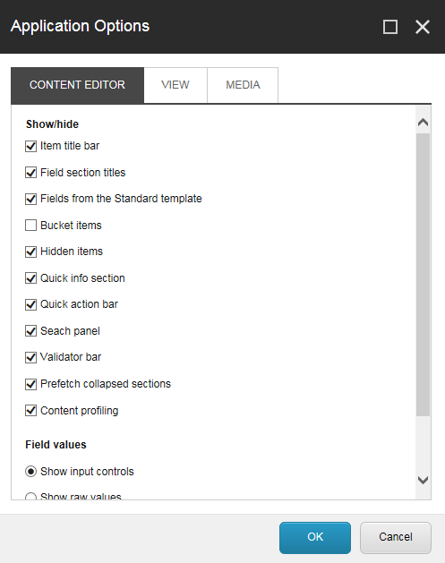
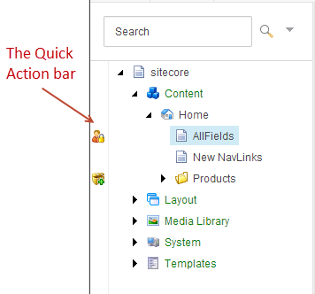
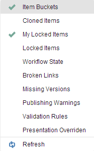

コンテンツエディタのカスタマイズ¶
コンテンツ エディタには、カスタマイズできる多くのユーザー インターフェイス要素が含まれています。
コンテンツ エディタ要素 - コンテンツ エディタのどの要素を表示するかを決めることができます。
コンテンツエディタのリボン - タブを非表示にしたり、リボン全体を非表示にしたり、リボン内に独自のツールバーを作成することができます。
コンテンツツリー - クイックアクションを追加したり、コンテンツツリーペインのサイズを変更したり、全体を非表示にすることができます。
このトピックでは、以下の方法について概説します。
コンテンツ エディタの要素をカスタマイズする¶
コンテンツ エディタのアプリケーション オプションを設定するには、以下の手順に従います。
[コンテンツ エディタ] で [コンテンツ エディタ] メニューをクリックし、[アプリケーション オプション] をクリックします。
アプリケーション オプション] ダイアログ ボックスで、[コンテンツ エディタ] タブで、該当する要素の非表示または表示のチェックボックスを選択またはクリアします。

[コンテンツ エディタ] タブで、関連する要素を非表示または表示にするには、いずれかのチェック ボックスを選択またはクリアします。
[表示] タブで、コンテンツ ツリーの表示方法を指定します。
[メディア] タブで、メディア ファイルの表示オプションを指定します。
{kind=link}
アプリケーションオプションの設定が完了したら、[OK] をクリックします。
コンテンツ エディタ リボンのカスタマイズ¶
コンテンツ エディタのリボンをカスタマイズするには
コンテンツ エディタで、リボン上の任意の場所を右クリックします。
表示されるメニューで、リボンで非表示にするタブのチェックボックスをオフにします。デフォルトのタブ選択を復元するには、[リセット] をクリックします。
{kind=link}
注釈
リボンを完全に非表示にしてタブのみを表示するには、コンテンツ エディタ リボン上の任意のタブをダブルクリックします。リボンを再度表示するには、任意のタブをクリックします。
リボンに独自のツールバーを作成するには、[カスタマイズ] をクリックします。
ツールバーのカスタマイズ] ダイアログ ボックスの [すべて] ペインで、グループを展開し、ツールバーに表示するコマンドを選択します。
{kind=link}
注釈
ツールバーに追加できるのはコマンドのみで、グループは追加できません。しかし、追加したコマンドをグループに分けるために、コマンドセパレータを追加することができます。上下の矢印を使って、好きな順番にコマンドを配置してください。
終了したら、[OK] をクリックします。
コンテンツエディタのリボンを右クリックし、メニューからマイツールバーを選択します。マイツールバータブがリボンに追加され、先ほど選択したすべてのコマンドが含まれています。
{kind=link}
コンテンツツリーのカスタマイズ¶
コンテンツ エディタでは、コンテンツ ツリーの特定の要素を非表示または表示にすることができます。
要素を隠す¶
[表示] タブで
コンテンツ ツリーを非表示にするには、[コンテンツ ツリー] チェック ボックスをオフにします。
コンテンツ ツリーのルート（サイトコア）とメディア ライブラリを非表示にするには、［全体のツリー］チェック ボックスをオフにします。これにより、ユーザーは自分の Web サイトの一部であるアイテムのみを見ることができます。
コンテンツ ツリーに表示されているシステム アイテムの一部を非表示にするには、［隠しアイテム］チェックボックスをクリアします。 他の 2 つの設定、[生の値] と [標準フィールド] は、管理者のみに関連しています。
{kind=link}
注釈
コンテンツ ツリーがスペースを取りすぎる場合は、コンテンツ ツリーと編集ペインの間にあるバーを左右にドラッグして、コンテンツ ツリー ペインのサイズを変更することができます。さらに、F11 を押してブラウザウィンドウを画面いっぱいに展開し、タイトルバー、メニュー、ツールバー、ステータスバーなどのユーザーインターフェイス要素を非表示にすることもできます。
クイックアクションを表示¶
クイック アクション バーは、コンテンツ ツリーの横に表示され、コンテンツ ツリー内のアイテムに関する有用な情報を表示することができます。たとえば、クイック アクション バーには、どのアイテムがアイテム バケット、クローン アイテム、ロックされたアイテムであるかを示すクイック アクションを表示することができます。
{kind=link}
クイックアクションバーを右クリックすると、利用可能なクイックアクションのリストが表示されたフローティングメニューが表示され、クリックしてコンテンツツリーのアイテムの横に表示または非表示にすることができます。クイックアクションはいくつでも表示できますが、選択したアクションごとにパフォーマンスが低下する場合があります。
注釈
利用できるクイックアクションは様々です。これはSitecoreのシステム管理者によって制御されます。
クイックアクションの中には、情報を得るためだけのものもあれば、クリックしてアイテムのアクションを実行することができるものもあります。
クイックアクションは以下の通りです。
アイテムバケツ - アイテムバケツの隣に表示されます。
クローンアイテム - 他のアイテムのクローンであるアイテムの隣に表示されます。アイコンをクリックすると元のアイテムが開きます。
マイロックアイテム - ロックしているアイテムの隣に表示されます。アイコンをクリックするとロックが解除されます。
ロックされたアイテム - 他のユーザーがロックしているアイテムの隣に表示されます。アイコンの上にマウスを置くと、誰がそのアイテムをロックしたかがツールチップに表示されます。
ワークフローの状態 - ワークフローの状態にあるアイテムの隣に表示されます。必要な権限を持っている場合は、アイコンをクリックして次のワークフロー状態にアイテムを移動することができます。
リンク切れ - リンク切れを含むアイテムの隣に表示されます。
欠落しているバージョン - 言語バージョンが欠落しているアイテムの隣に表示されます。
公開警告 - 公開警告があるアイテムの隣に表示されます。
検証ルール - 検証エラーを含む項目の隣に表示されます。
プレゼンテーションの上書き - テンプレートのレイアウト設定が他のレイアウトによって上書きされている項目の隣に表示されます。
重要
バリデーションルールとブロークンリンクのクイックアクションが最もパフォーマンスを低下させます。コンテンツツリーでアイテムを開くたびに、Sitecore はこれらのクイックアクションを更新しなければなりません。